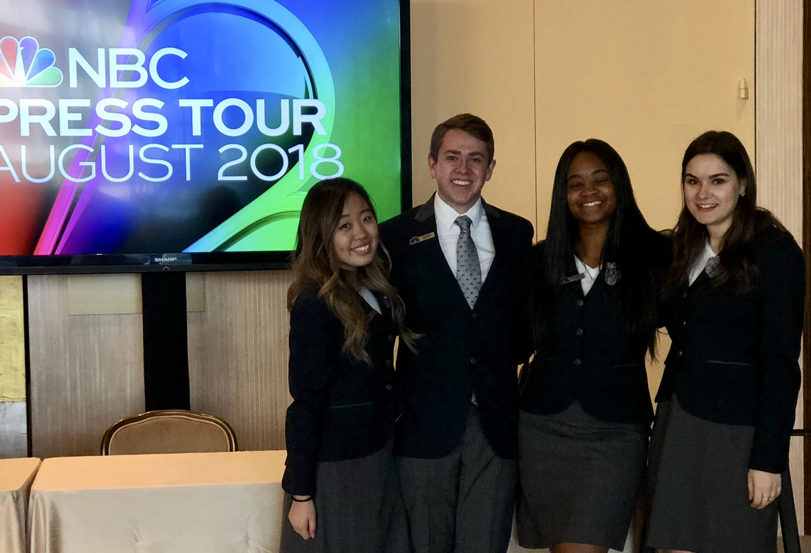

Projected Career Parth
After working in the media and entertainment industry, I am making the switch into the technology sector. Having a background in creative marketing, I got an MBA to balance my experiences with more quantitative strategies.
Tech is an exciting industry to work in with all the evolving innovations. I plan to create data driven strategies to market and help others incorporate the best technology has to offer in their lives.
Experiences in Marketing
My professional marketing experience began at NBCUniversal in a rotational marketing leadership program. Through this experience I was able to build marketing breadth by working in departments ranging from: research, analytics, digital marketing, public relations, social media marketing, and broadcast marketing.
Through my MBA experience, I have built up on these experiences with a strategy and analtyics internship with Verizon, a Product Management internship with CLASP Medical, and consulting opportunities with companies such as Ancestry.com, PopWalk App, Chatbooks, Traeger, and the BYU MBA program.
 NBC Press Tour Marketing Event.Anticipated Contributions
With my background, I bring a balanced mix of creativity and quantitative reasoning. My contributions to marketing in the tech industry will utilize these skills to highlight the best of the products I work on and how it can change the lives of consumers.